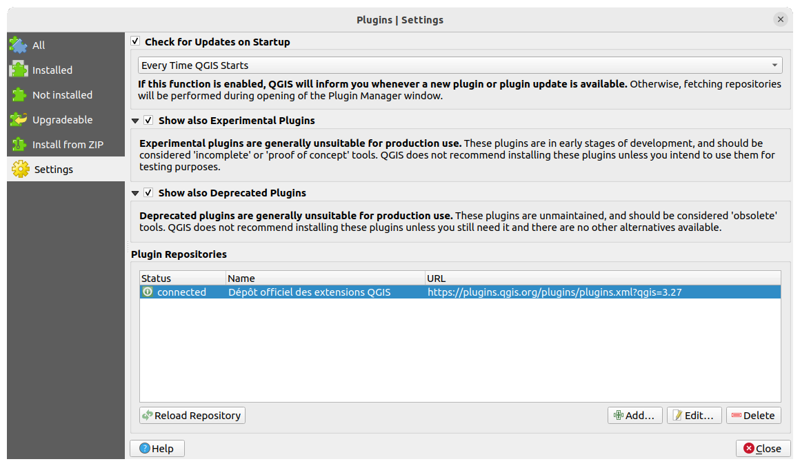

At the bottom of the left panel, the  Settings tab
is the main place you can configure which plugins can be displayed in your application.
You can use the following options:
Settings tab
is the main place you can configure which plugins can be displayed in your application.
You can use the following options:
 Check for Updates on Startup. Whenever an installed
plugin has update available, QGIS will inform you Every Time QGIS
starts, Once a Day, Every 3 Days, Every
Week, Every 2 Weeks or Every month.
Check for Updates on Startup. Whenever an installed
plugin has update available, QGIS will inform you Every Time QGIS
starts, Once a Day, Every 3 Days, Every
Week, Every 2 Weeks or Every month.
Show also Experimental Plugins. QGIS will show you
plugins in early stages of development, which are generally unsuitable for
production use. For these plugins, you can install either the stable or
the experimental version, and at any moment switch from one to the other.
Show also Deprecated Plugins. These plugins are
usually unmaintained because they have replacement functions in QGIS,
a lack of maintainers, they rely on functions that are no longer available
in QGIS… They are generally unsuitable for production use and appear
grayed in the plugins list.
By default, in the Plugin Repositories section, QGIS provides
you with its official plugin repository with the URL
https://plugins.qgis.org/plugins/plugins.xml?qgis=version
(where <version> represents the exact QGIS version you are running).
To add external author repositories, click  Add…
and fill in the Repository Details form with a name and the URL.
The URL can be of
Add…
and fill in the Repository Details form with a name and the URL.
The URL can be of http:// or file:// protocol type.
The default QGIS repository is an open repository and you don’t need any
authentication to access it. You can however deploy your own plugin repository
and require an authentication (basic authentication, PKI). You can get more
information on QGIS authentication support in authentication chapter.
If you do not want one or more of the added repositories, they can be disabled
from the Settings tab via the  Edit… button,
or completely removed with the
Edit… button,
or completely removed with the  Delete button.
Delete button.

Fig. 9.1 The Settings tab
The upper tabs in the Plugins dialog provide you with lists of plugins
based on their install, creation or update status. Depending on the plugins settings,
available tabs can be:
 All: shows all the available plugins in
the enabled repositories
All: shows all the available plugins in
the enabled repositories
 Installed: shows both the plugins you installed
and the core plugins that are installed by default and you can not uninstall
Installed: shows both the plugins you installed
and the core plugins that are installed by default and you can not uninstall
 Not installed: shows uninstalled or not yet installed
plugins in the enabled repositories
Not installed: shows uninstalled or not yet installed
plugins in the enabled repositories
 New: shows plugins released since the last
Check for Updates on Startup
New: shows plugins released since the last
Check for Updates on Startup
 Upgradeable: shows installed plugins that have
published a more recent version in the repository
Upgradeable: shows installed plugins that have
published a more recent version in the repository
 Invalid: shows all installed plugins that are
currently broken for any reason (missing dependency, errors while loading,
incompatible functions with QGIS version…)
Invalid: shows all installed plugins that are
currently broken for any reason (missing dependency, errors while loading,
incompatible functions with QGIS version…)
At the top of the tabs, a Search function helps you find any
plugin using metadata information (author, name, description, tag,…).

Fig. 9.2 Searching a plugin from the All tab
Select a plugin and you will have some metadata displayed in the right panel:
information on whether the plugin is experimental or has an experimental
version available (if Show also Experimental Plugins is checked)
summary and description
rating vote(s) (you can vote for your preferred plugin!)
tags
some useful links to the home page, tracker and code repository
author(s)
version(s) available with link to download page in the repository, or path to
local folder for installed plugins
The Plugin Manager dialog allows you to interact with the latest
version of the plugins. When enabled, the experimental version can be shown
only if it is more recent than the latest stable version.
Depending on the active tab, whether the selected plugin is installed,
you will be given some of the following options:
Install: installs the latest stable version of the selected plugin
Install Experimental Plugin: installs the experimental version
of the selected plugin
Reinstall Plugin: installs the same stable version of the plugin
e.g. after it has failed to load
Reinstall Experimental Plugin: installs the same experimental version
of the plugin e.g. after it has failed to load
Upgrade Plugin: upgrades selected plugin to its latest stable version
Upgrade Experimental Plugin: upgrades selected plugin to its
experimental version
Upgrade All: upgrades all installed plugins to their more recent
stable or experimental version (depending on whether their previously installed
version was stable or experimental).
Downgrade Plugin: moves from the experimental version of the plugin
to its previous stable version
Downgrade Experimental Plugin: moves from an experimental version
of the plugin to its latest published experimental version. This may occur
when playing with a not yet published version.
Uninstall Plugin: removes the installed plugin from the user profile
An installed plugin displays a checkbox on its left.
Uncheck it to temporarily deactivate the plugin.
Right-click on a plugin in the list and you will be able to sort the plugins list
by various metadata. The new order applies to all the tabs. Sort options are:
Sort by Name
Sort by Downloads
Sort by Vote
Sort by Status
Sort by Date Created
Sort by Date Updated